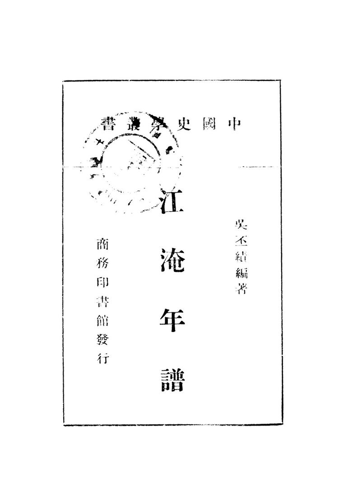
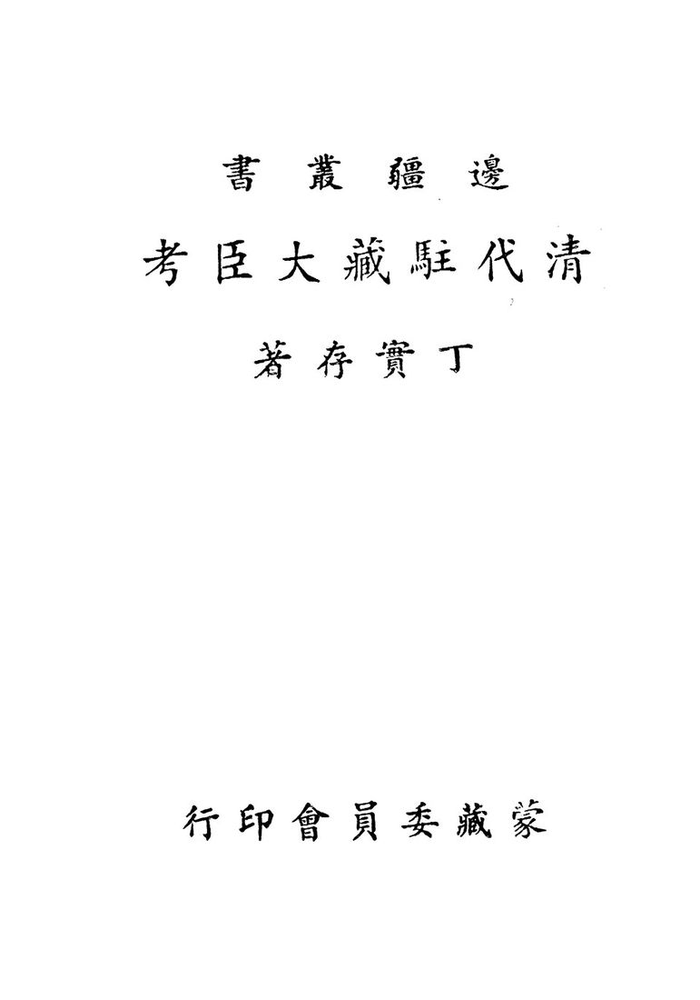

所在云南
适宜季节11 月至次年 3 月
建议天数2-3 天
资料状态资料待复核
动态信息出行前复核：门票、开放时间与预约规则会变化，请以官方渠道为准。
先看结论4
快速决策索引4
全年月份速查12
1月
- 食物
- 腊排骨火锅、黑山羊火锅、纳西火塘、酥油茶、丽江粑粑
- 提醒
- 早晚冷，雪山索道和道路看天气，古城石板路湿滑
2月
- 食物
- 腊排骨、鸡豆凉粉、纳西烤鱼、米灌肠
- 提醒
- 春节人流大，雪山大索道和热门住宿提前订
3月
- 食物
- 丽江粑粑、鸡豆凉粉、纳西烤肉、鲜花饼
- 提醒
- 春季风大，雪山可见度看天气
4月
- 食物
- 纳西火锅、腊排骨、野菜、牦牛肉
- 提醒
- 清明和五一前后热门景点拥挤，徒步看路况
5月
- 食物
- 鸡豆凉粉、丽江粑粑、纳西烤鱼、火塘菜
6月
- 食物
- 菌子火锅、腊排骨、鸡豆凉粉、冰粉
- 提醒
- 进入雨季，雪山能见度下降，虎跳峡徒步看降雨
7月
- 食物
- 菌子火锅、火塘菜、烧烤、冰粉
- 提醒
- 暑期人多，雨季山路和峡谷风险更高
8月
- 食物
- 野生菌、腊排骨、纳西烤鱼、凉粉
- 提醒
- 雨季别强求雪山全貌，虎跳峡和山路必须看安全公告
9月
- 食物
- 菌子尾季、牦牛肉、腊排骨、纳西菜
10月
- 食物
- 腊排骨、黑山羊、鸡豆凉粉、丽江粑粑
11月
- 食物
- 腊排骨火锅、黑山羊火锅、酥油茶、牦牛肉
- 提醒
- 早晚温差大，高海拔保暖
12月
- 食物
- 腊排骨、火塘菜、丽江粑粑、米灌肠
- 提醒
- 雪山热门索道抢票难，泸沽湖早晚冷
季节限定景观9


景点营业时间和票价速查8
使用说明
- 以下为常见开放时间和成人基础票价，节假日、索道、演出、观光车、游船、特展会调整
- 丽江古城、束河、白沙、泸沽湖、玉龙雪山相关政策变化较多，出发前以官方平台为准
- 开放式街区、市场、古镇公共道路多为免费，店铺、院落、停车、骑马、游船另计
丽江古城和周边
- 丽江古城/大研古城
- 开放式古城，全天可逛；古城维护费常见 50 元/人次，有效期 365 天，具体征收和免缴情形以丽江市规定为准
- 四方街/大水车/酒吧街/五一街/七一街：开放式街区，免费逛；店铺按各自营业
- 木府/丽江古城博物院
- 常见 8:30-17:30，成人票常见 40 元左右；以官方购票页为准
- 狮子山万古楼
- 常见 8:30-18:00，成人票常见 35 元左右；以景区公告为准
展开其余 3 项
- 黑龙潭公园
- 常见 7:30-21:30 左右；常与古城维护费/景区管理政策关联，具体以现场公告为准
- 东巴文化博物馆/丽江市博物院
- 常见 9:00-17:00 或 8:30-17:30，免费或低价参观以馆方公告为准
- 忠义市场
- 本地市场，清晨到中午更热闹，免费；摊位按各自营业
束河、白沙、玉湖
- 束河古镇
- 开放式古镇，全天可逛；古城维护费政策适用范围以官方规定为准，店铺按各自营业
- 茶马古道博物馆
- 常见 9:00-17:30，票价和开放以馆方/束河景区公告为准
- 白沙古镇
- 开放式古镇，全天可逛；古城维护费政策适用范围以官方规定为准，店铺按各自营业
- 白沙壁画
- 常见 8:30-17:30，成人票常见 20 元左右；以景区公告为准
展开其余 2 项
- 玉湖村
- 开放式村寨，免费或村寨维护/停车以现场公告为准；骑马、咖啡、民宿另计
- 文海村
- 开放式高原村落，免费；骑马/餐饮/住宿按商家收费
玉龙雪山片区
- 玉龙雪山景区
- 常见 7:00-18:00，旺季/节假日可能提前至 6:00 入园；景区进山费常见 100 元
- 冰川公园索道
- 索道票常见 140 元左右，需提前预约；运营受风雪和天气影响
- 云杉坪索道
- 索道票常见 60 元左右，需预约；适合轻松雪山草甸线
- 牦牛坪索道
- 索道票常见 65 元左右，需预约；适合高原牧场视角
展开其余 5 项
- 蓝月谷
- 在玉龙雪山景区内，通常随进山费进入；电瓶车常见 50 元左右，自愿消费
- 甘海子
- 在玉龙雪山景区内，常作换乘和观景点
- 东巴谷
- 常见全天开放或白天开放；部分区域可免费远眺雪山，景区项目以现场公告为准
- 玉水寨
- 常见 8:00-18:00，成人票常见 50 元左右；以官方购票页为准
- 印象丽江
- 演出场次和票价随季节调整，常见票价 280 元左右，以官方购票页为准
拉市海和周边
- 拉市海湿地
- 开放和收费按各湿地/马场/会所不同，观鸟区域、骑马、划船、茶马古道项目需分别问清
- 指云寺
- 常见白天开放，免费或低价入寺以现场公告为准
泸沽湖
- 泸沽湖景区
- 环湖开放式游览为主，云南宁蒗片区门票常见 50 元；四川片区票务另行管理
- 猪槽船
- 按码头和线路收费，常见几十元到百元不等
- 里格半岛/大落水/女神湾/草海走婚桥：开放式湖区村落/观景点，通常免费；停车、游船、餐饮另计
- 摩梭家访/篝火晚会
- 按当地项目收费，价格和内容先问清
虎跳峡和远郊
- 虎跳峡景区
- 常见 7:30-16:30 或 8:00-16:00，成人票常见 45 元；丽江段/香格里拉段和徒步入口需分清
- 中虎跳徒步
- 村道/徒步路线，部分栈道或天梯由当地维护收费，强天气依赖
- 长江第一湾
- 开放式观景点，免费或停车/观景台低价收费以现场为准
- 老君山黎明景区
- 常见白天开放，门票和观光车以景区公告为准
展开其余 2 项
- 宝山石头城
- 开放式古村寨属性较强，交通远，收费和开放以现场公告为准
- 千龟山
- 老君山片区景点，门票和开放以官方公告为准
演艺和商业
- 丽江千古情
- 演出场次和票价按日期变化，常见成人票 280 元左右，以宋城官方购票页为准
- 丽江古城酒吧/咖啡店
- 按各店营业
- 雪山景观咖啡馆
- 按各店营业和最低消费规则
行前准备3
- 预约和核对
- 玉龙雪山进山票、索道票、景区交通、演出票分开看；大索道提前抢
- 泸沽湖确认电子门票、环湖交通、住宿位置和返程车
- 虎跳峡确认徒步路况、塌方、客栈、返程车
- 古城维护费看当年征收规则、适用范围和免缴情形
- 博物馆/木府/黑龙潭看开放、预约和闭馆
- 穿搭和装备
- 全年防晒霜、帽子、墨镜、舒适防滑鞋
- 玉龙雪山保暖外套、手套、帽子，氧气按身体情况准备
- 虎跳峡徒步鞋、雨具、轻装背包、现金少量备用
- 泸沽湖早晚冷，湖边风大，带外套
- 古城石板路不适合拉大箱子走很远
- 高反和安全
- 丽江古城海拔约 2400 米，多数人可适应；玉龙雪山大索道上站海拔高，谨慎冲刺
- 初到第一天别喝太多酒、别剧烈运动
- 高海拔不适时及时下撤，不要硬撑
住宿建议6
- 丽江古城/大研古城
- 适合第一次来、夜晚逛古城、吃喝方便、交通集中
- 优点景点密集，餐饮多，去木府、黑龙潭、忠义市场方便
- 缺点商业化、人多、石板路拖箱子累，热门区域夜晚吵
- 关键词南门、忠义市场、五一街、七一街、四方街外围
- 束河古镇
- 适合想安静、慢住、带父母、避开大研人流
- 优点比大研安静，餐饮和民宿成熟，去白沙/雪山方向方便
- 缺点夜生活不如大研
- 白沙古镇
- 适合雪山景观、咖啡、慢生活、年轻人拍照
- 优点能看雪山，街区气质更松弛
- 缺点热门后价格上涨，旺季小街拥堵
- 玉湖村/文海村
- 适合雪山脚下、村落、拍照、安静住宿
- 优点自然感强，适合慢游
- 缺点交通和餐饮不如古城方便
- 丽江站/客运站周边
- 适合赶高铁/大巴、预算型住宿
- 优点交通方便
- 缺点旅行氛围弱
- 泸沽湖
- 大落水交通和餐饮方便，第一次去稳妥
- 里格景观经典，住宿紧俏
- 女神湾/蒗放日落和安静感更强，交通相对不便
地图分区6
大研古城片区
束河白沙片区
玉龙雪山片区
拉市海片区
- 核心点拉市海湿地、茶马古道骑马、指云寺
- 玩法观鸟、骑马、湿地
泸沽湖片区
- 核心点大落水、里格半岛、女神湾、草海走婚桥、洛洼码头、格姆女神山
- 玩法环湖、船、日出日落、摩梭文化
虎跳峡/香格里拉方向
核心景点16
丽江古城
四方街、大水车、纳西院落、小桥流水、夜景
- 最佳时间
- 全年，早晨安静，晚上热闹
- 玩法
- 早晨走小巷，晚上看灯火，不只逛主街
- 搭配
- 木府、狮子山、忠义市场、黑龙潭
- 值不值得专程
- 第一次来值得；之后可作为住宿和吃喝 base
- 提醒
- 商业化强，消费前问价格
木府
木氏土司府衙、纳西历史、古城视角
- 最佳时间
- 白天
- 搭配
- 丽江古城、狮子山、四方街
- 值不值得专程
- 喜欢历史建筑值得
狮子山万古楼
俯瞰丽江古城和雪山方向
- 最佳时间
- 傍晚前后
- 搭配
- 木府、古城
黑龙潭公园
雪山倒影、得月楼、五孔桥、东巴文化博物馆
- 最佳时间
- 晴天早晨
- 搭配
- 丽江古城、东巴文化博物馆
- 值不值得专程
- 天气好值得

忠义市场
本地市场、水果、菌子、小吃、纳西生活气
- 最佳时间
- 早上
- 可吃
- 鸡豆凉粉、丽江粑粑、米线、包浆豆腐、水果
- 值不值得专程
- 喜欢市场和吃早餐值得

束河古镇
茶马古道、九鼎龙潭、青龙桥、小店和民宿
- 最佳时间
- 上午和傍晚
- 搭配
- 白沙、茶马古道博物馆
- 值不值得专程
- 值得，比大研更适合慢逛

白沙古镇
雪山街景、纳西村落、咖啡、白沙壁画
- 最佳时间
- 晴天上午到下午
- 搭配
- 玉湖村、束河、雪山线
- 值不值得专程
- 值得，丽江慢游核心
玉湖村
雪山脚下石头村、洛克旧居、村落和草甸
- 最佳时间
- 晴天上午或傍晚
- 搭配
- 白沙、东巴谷、玉龙雪山
- 值不值得专程
- 喜欢村落和雪山视角值得
玉龙雪山
冰川公园、蓝月谷、云杉坪、牦牛坪、甘海子
- 最佳时间
- 11 月至次年 5 月看雪山概率更高，全年都可去
- 玩法
- 大索道冲冰川，云杉坪轻松草甸，牦牛坪开阔牧场
- 搭配
- 白沙、玉湖村、东巴谷
- 值不值得专程
- 值得，丽江自然核心
- 提醒
- 索道票提前抢，高反量力而行
蓝月谷
蓝色湖水、雪山背景、白水河
- 最佳时间
- 晴天
- 搭配
- 玉龙雪山索道线
- 值不值得专程
- 通常作为雪山一日游组成部分
云杉坪
森林、草甸、雪山
- 最佳时间
- 5-10 月草甸，冬季看雪山背景
- 适合
- 不想上高海拔冰川的人
牦牛坪
高原牧场、雪山侧面、开阔视野
- 最佳时间
- 5-10 月草甸，秋冬看雪山
- 提醒
- 风大，交通更折腾

东巴谷
雪山远景、东巴文化、谷地景观
- 最佳时间
- 晴天早晨看日照金山
- 玩法
- 作为玉龙雪山轻量替代或补充

拉市海
湿地、候鸟、骑马、茶马古道体验
- 最佳时间
- 冬季候鸟，春秋湿地
- 提醒
- 骑马/划船价格差异大，避免被临时推销
泸沽湖
湖泊、摩梭文化、里格半岛、女神湾、草海走婚桥
- 最佳时间
- 10 月至次年 5 月晴天
- 玩法
- 环湖、猪槽船、住湖边、看日出日落
- 值不值得专程
- 值得，但至少 2 天 1 晚
虎跳峡
金沙江峡谷、玉龙雪山和哈巴雪山夹峙、徒步
- 最佳时间
- 3-5 月、9-11 月
- 玩法
- 上虎跳半日观景，中虎跳/高路徒步 1-2 天
- 值不值得专程
- 喜欢徒步和峡谷非常值得
- 提醒
- 雨季风险高，先看路况
街区、夜市和市场6
丽江古城四方街/五一街/七一街
- 最佳时间
- 下午到晚上
- 可吃
- 鸡豆凉粉、丽江粑粑、烤饵块、纳西烤鱼、酒吧小吃
- 提醒
- 主街价格偏高，进店前看菜单
忠义市场
- 最佳时间
- 早上到中午
- 可吃
- 米线、包子、鸡豆凉粉、水果、菌子、腊排骨
- 适合
- 早餐和买水果
束河小街
- 最佳时间
- 上午和傍晚
- 可吃
- 咖啡、简餐、纳西菜、牦牛肉
白沙古镇主街
- 最佳时间
- 晴天上午到下午
- 可吃
- 雪山咖啡、面包甜品、纳西菜、牦牛肉火锅
- 提醒
- 雪山景观店有溢价
花马街/七星街
- 最佳时间
- 晚饭和夜宵
- 可吃
- 腊排骨火锅、黑山羊火锅、烧烤、小吃
泸沽湖村落小街
- 最佳时间
- 傍晚
- 可吃
- 湖鱼、摩梭家常菜、烧烤、酥油茶
美食总表5
必吃主食和小吃
- 丽江粑粑
- 甜咸两种，适合早餐和加餐
- 鸡豆凉粉
- 丽江代表小吃，可凉拌可煎
- 纳西烤鱼
- 古城和束河常见
- 米灌肠
- 纳西特色，口味接受度看个人
展开其余 3 项
- 包浆豆腐
- 夜市和市场常见
- 烤饵块/烤乳扇
- 云南常见小吃
- 酥油茶
- 高原风味，适合雪山和藏餐
火锅和正餐
- 腊排骨火锅
- 丽江代表，花马街和古城周边常见
- 黑山羊火锅
- 秋冬适合
- 牦牛肉火锅
- 雪山和白沙方向常见
- 纳西火塘
- 适合多人晚饭
展开其余 3 项
- 土鸡火锅
- 菌子火锅
- 夏秋季节，必须煮透
- 三文鱼/雪山鱼
- 玉龙雪山冷水鱼方向，按兴趣选择
纳西菜和地方菜
- 纳西烤肉
- 水性杨花
- 吹肝
- 腊肉炒野菜
展开其余 3 项
- 东巴烤肉
- 泸沽湖湖鱼
- 摩梭猪膘肉
饮品和甜品
- 雪山咖啡
- 酥油茶
- 牦牛酸奶
- 鲜花饼
展开其余 2 项
- 云南咖啡
- 梅子酒/青梅酒
伴手礼
- 鲜花饼
- 东巴纸/东巴文字文创
- 普洱茶/滇红
- 牦牛肉干
展开其余 3 项
- 菌菇制品
- 纳西刺绣/披肩
- 银器玉石谨慎购买，先做功课
餐厅和店铺9
阿婆腊排骨
- 类型
- 腊排骨火锅
- 适合
- 第一次吃丽江腊排骨
- 提醒
- 同名/相似店多，确认门店和评价
云雪丽餐厅
- 类型
- 云南菜/纳西菜
- 适合
- 古城附近正餐
和叔食府
- 类型
- 纳西菜/云南菜
- 适合
- 多人正餐
滇西王子
- 类型
- 云南菜连锁
- 适合
- 想吃稳定一点的云南菜
88 号小吃店
- 类型
- 丽江小吃
- 适合
- 鸡豆凉粉、丽江粑粑、小吃拼盘
花马街腊排骨/黑山羊店
- 类型
- 火锅
- 适合
- 住古城外或想避开主街时
白沙雪山咖啡店
- 类型
- 咖啡/面包/拍照
- 适合
- 晴天看雪山
- 提醒
- 先看当天云量，不要为雪山视野盲排队
忠义市场小吃摊
- 类型
- 早餐/小吃/水果
- 适合
- 早上吃本地味
泸沽湖湖边餐馆
- 类型
- 摩梭家常菜/湖鱼/烧烤
- 适合
- 住湖边时就近吃
博物馆和展馆5
东巴文化博物馆/丽江市博物院
- 类型
- 地方综合和东巴文化专题
- 重点
- 东巴文字、纳西民俗、东巴经、丽江三项世界遗产
- 时间
- 1.5-2.5 小时
- 搭配
- 黑龙潭
木府/丽江古城博物院
- 类型
- 土司府衙和古城历史
- 重点
- 木氏土司、纳西建筑、丽江古城格局
- 搭配
- 大研古城、狮子山
茶马古道博物馆
- 类型
- 茶马古道专题
- 重点
- 束河、马帮、普洱茶贸易、滇藏通道
- 搭配
- 束河古镇
白沙壁画
- 类型
- 宗教艺术和历史壁画
- 重点
- 明代壁画、汉藏纳西文化融合
- 搭配
- 白沙古镇
洛克故居/玉湖村相关展陈
- 类型
- 历史人物和村落展陈
- 重点
- 约瑟夫·洛克、纳西村落和雪山文化
自然、远郊和周边7
泸沽湖
- 适合
- 湖泊、摩梭文化、慢住、摄影
- 时间
- 2-3 天更合适
- 提醒
- 丽江往返路程长，不建议当天往返
虎跳峡
- 适合
- 峡谷、徒步、金沙江、雪山
- 时间
- 上虎跳半天，高路徒步 2 天
- 提醒
- 徒步强度和风险都高于普通景点
老君山
- 适合
- 丹霞、森林、高山草甸、徒步
- 时间
- 1-2 天
- 提醒
- 交通和开放以景区公告为准
长江第一湾/石鼓镇
- 适合
- 顺路看金沙江大转弯、红色历史
- 搭配
- 虎跳峡或香格里拉方向
宝山石头城
- 适合
- 小众村寨、金沙江峡谷、摄影
- 时间
- 1-2 天，自驾/包车更合适
文海村
- 适合
- 高原村落、花草、雪山远景、慢住
- 提醒
- 道路和天气影响明显
拉市海
- 适合
- 湿地、候鸟、骑马、轻度郊游
- 提醒
- 商业项目多，提前问价
路线模板12
远郊一日游决策5
交通细节5
- 到达丽江
- 丽江站高铁/动车主要到达站，去古城打车或公交
- 丽江三义机场到古城、束河、白沙需要机场巴士/打车
- 大理到丽江动车约 1.5-2 小时，自驾/包车约 2.5-3.5 小时
- 市区移动
- 古城内以步行为主，石板路拖箱子累
- 大研、束河、白沙之间打车较方便
- 去白沙/玉湖村/雪山方向可打车、公交或包车
- 去玉龙雪山
- 公交、景区专线、拼车、包车都可
- 旺季优先官方购票和正规交通，不要临时信低价团
- 去泸沽湖
- 常见为旅游专线/大巴/包车，路程长
- 注意返程时间和山路晕车
- 去虎跳峡
- 可丽江客运站/旅游大巴/拼车前往
- 徒步终点和返程点提前和客栈/司机确认
避坑和取舍9
不要低估玉龙雪山票务复杂度
- 进山费、索道、景区车、蓝月谷电瓶车、演出都是不同项目
不要高反硬撑
- 头痛、胸闷、明显不适就下撤
不要雨季硬走虎跳峡徒步
- 塌方、落石、泥路风险真实存在
不要只在古城主街吃饭买东西
- 主街商业化强，忠义市场和古城外围更接地气
不要被低价拉市海骑马团套路
- 路线、时长、是否含船、是否进购物点都要问清
不要把泸沽湖安排成一天往返
- 车程长，体验差
不要在雪山买过多一次性氧气和租衣服
- 按身体和天气判断，正规点购买
不要忽视紫外线
- 丽江海拔高，阴天也晒
不要在古城拖大箱子走很远
- 住宿尽量选车能到附近的位置